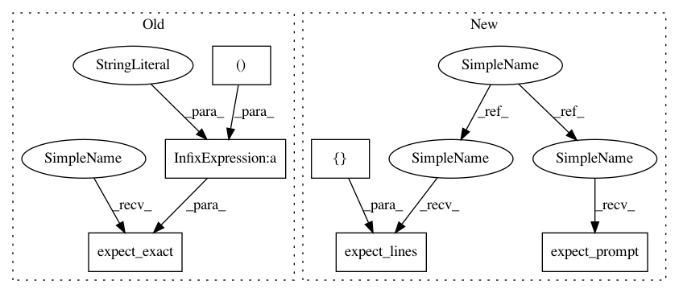

407b14f1959b1deae3328de8a6da60b5d62c47e3,shell/tests/test_shell.py,,test_describe_column_with_generator,#Any#,212
Before Change
)
assert c.before == ""
c.sendline(".describe columns %s" % (gen,))
c.expect_exact(
".describe columns %s\r\n"
"colno | name | stattype | shortname\r\n"
"------+---------------------+-----------+----------\r\n"
" 1 | N_DEATH_ILL | numerical | None\r\n"
" 2 | TTL_MDCR_SPND | numerical | None\r\n"
" 3 | MDCR_SPND_INP | numerical | None\r\n"
" 4 | MDCR_SPND_OUTP | numerical | None\r\n"
" 5 | MDCR_SPND_LTC | numerical | None\r\n"
" 6 | MDCR_SPND_HOME | numerical | None\r\n"
" 7 | MDCR_SPND_HSPC | numerical | None\r\n"
" 8 | MDCR_SPND_AMBLNC | numerical | None\r\n"
" 9 | MDCR_SPND_EQP | numerical | None\r\n"
" 10 | MDCR_SPND_OTHER | numerical | None\r\n"
" 11 | TTL_PARTB | numerical | None\r\n"
" 12 | PARTB_EVAL_MGMT | numerical | None\r\n"
" 13 | PARTB_PROCS | numerical | None\r\n"
" 14 | PARTB_IMAG | numerical | None\r\n"
" 15 | PARTB_TESTS | numerical | None\r\n"
" 16 | PARTB_OTHER | numerical | None\r\n"
" 17 | HOSP_REIMB_P_DCD | numerical | None\r\n"
" 18 | HOSP_DAYS_P_DCD | numerical | None\r\n"
" 19 | REIMB_P_PTNT_DAY | numerical | None\r\n"
" 20 | HOSP_REIMB_RATIO | numerical | None\r\n"
" 21 | HOSP_DAY_RATIO | numerical | None\r\n"
" 22 | REIMB_P_DAY_RATIO | numerical | None\r\n"
" 23 | MD_PYMT_P_DCD | numerical | None\r\n"
" 24 | MD_VISIT_P_DCD | numerical | None\r\n"
" 25 | PYMT_P_MD_VISIT | numerical | None\r\n"
" 26 | MD_VISIT_PYMT_RATIO | numerical | None\r\n"
" 27 | MD_VISIT_RATIO | numerical | None\r\n"
" 28 | PYMT_P_VISIT_RATIO | numerical | None\r\n"
" 29 | HOSP_BEDS | numerical | None\r\n"
" 30 | TTL_IC_BEDS | numerical | None\r\n"
" 31 | HI_IC_BEDS | numerical | None\r\n"
" 32 | INT_IC_BEDS | numerical | None\r\n"
" 33 | MED_SURG_BEDS | numerical | None\r\n"
" 34 | SNF_BEDS | numerical | None\r\n"
" 35 | TOTAL_FTE | numerical | None\r\n"
" 36 | MS_FTE | numerical | None\r\n"
" 37 | PC_FTE | numerical | None\r\n"
" 38 | MS_PC_RATIO | numerical | None\r\n"
" 39 | RNS_REQ | numerical | None\r\n"
" 40 | HOSP_DAYS_P_DCD2 | numerical | None\r\n"
" 41 | TTL_IC_DAYS_P_DCD | numerical | None\r\n"
" 42 | HI_IC_DAYS_P_DCD | numerical | None\r\n"
" 43 | INT_IC_DAYS_P_DCD | numerical | None\r\n"
" 44 | MED_SURG_DAYS_P_DCD | numerical | None\r\n"
" 45 | SNF_DAYS_P_DCD | numerical | None\r\n"
" 46 | TTL_MD_VISIT_P_DCD | numerical | None\r\n"
" 47 | MS_VISIT_P_DCD | numerical | None\r\n"
" 48 | PC_VISIT_P_DCD | numerical | None\r\n"
" 49 | MS_PC_RATIO_P_DCD | numerical | None\r\n"
" 50 | HHA_VISIT_P_DCD | numerical | None\r\n"
" 51 | PCT_DTHS_HOSP | numerical | None\r\n"
" 52 | PCT_DTHS_W_ICU | numerical | None\r\n"
" 53 | PCT_DTHS_HSPC | numerical | None\r\n"
" 54 | HSPC_DAYS_P_DCD | numerical | None\r\n"
" 55 | PCT_PTNT_10_MD | numerical | None\r\n"
" 56 | N_MD_P_DCD | numerical | None\r\n"
" 57 | TTL_COPAY_P_DCD | numerical | None\r\n"
" 58 | MD_COPAY_P_DCD | numerical | None\r\n"
" 59 | EQP_COPAY_P_DCD | numerical | None\r\n"
" 60 | QUAL_SCORE | numerical | None\r\n"
" 61 | AMI_SCORE | numerical | None\r\n"
" 62 | CHF_SCORE | numerical | None\r\n"
" 63 | PNEUM_SCORE | numerical | None\r\n"
"bayeslite> " % (gen,)
)
assert c.before == ""
def test_hook(spawnbdb):
After Change
def test_describe_column_with_generator(spawngen):
gen, c = spawngen
c.sendexpectcmd(".describe models %s" % (gen,))
c.expect_lines([
"modelno | iterations",
"--------+-----------",
])
c.expect_prompt()
c.sendexpectcmd(".describe columns %s" % (gen,))
c.expect_lines([
"colno | name | stattype | shortname",
"------+---------------------+-----------+----------",
In pattern: SUPERPATTERN
Frequency: 4
Non-data size: 6
Instances
Project Name: probcomp/bayeslite
Commit Name: 407b14f1959b1deae3328de8a6da60b5d62c47e3
Time: 2015-04-27
Author: riastradh+probcomp@csail.mit.edu
File Name: shell/tests/test_shell.py
Class Name:
Method Name: test_describe_column_with_generator
Project Name: probcomp/bayeslite
Commit Name: 407b14f1959b1deae3328de8a6da60b5d62c47e3
Time: 2015-04-27
Author: riastradh+probcomp@csail.mit.edu
File Name: shell/tests/test_shell.py
Class Name:
Method Name: test_describe_column_with_generator
Project Name: probcomp/bayeslite
Commit Name: 407b14f1959b1deae3328de8a6da60b5d62c47e3
Time: 2015-04-27
Author: riastradh+probcomp@csail.mit.edu
File Name: shell/tests/test_shell.py
Class Name:
Method Name: test_read_nonsequential_verbose
Project Name: probcomp/bayeslite
Commit Name: 407b14f1959b1deae3328de8a6da60b5d62c47e3
Time: 2015-04-27
Author: riastradh+probcomp@csail.mit.edu
File Name: shell/tests/test_shell.py
Class Name:
Method Name: test_hook
Project Name: probcomp/bayeslite
Commit Name: 407b14f1959b1deae3328de8a6da60b5d62c47e3
Time: 2015-04-27
Author: riastradh+probcomp@csail.mit.edu
File Name: shell/tests/test_shell.py
Class Name:
Method Name: test_read_nonsequential